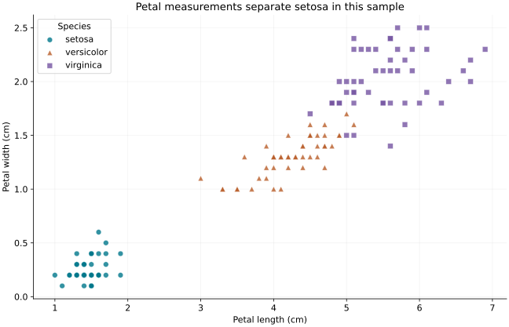
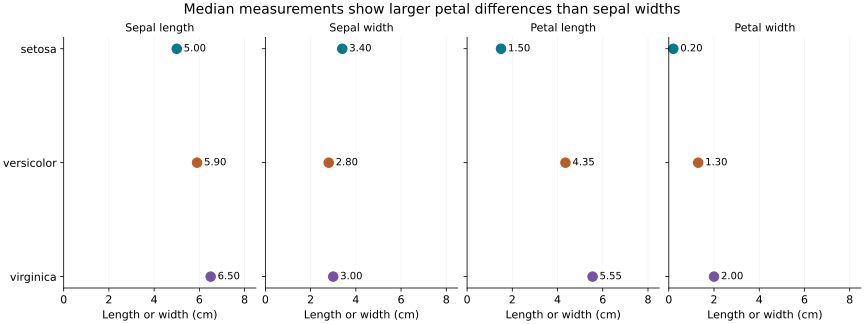

Check the inputs
Validate counts, missingness and units. Document source permissions and keep the original observations available.
DATA SCIENCE PORTFOLIO / 2026
I study data science and data visualization. My work connects a focused question, reproducible Python analysis, and visual explanations that make their limitations clear.
Explore the project ↓How do petal measurements and median flower measurements differ between three Iris species in this historical sample?

Setosa petal lengths span 1.0–1.9 cm, while the other species start at 3.0 cm in this sample. Color and shape identify species. Overlap among the other two species cautions against treating a visual pattern as predictive accuracy.

Median petal lengths are 1.50, 4.35 and 5.55 cm for setosa, versicolor and virginica. The common zero-based scale supports comparison; medians summarize groups but hide their spread.
READ THE FINDING WITH ITS LIMITATION
The balanced 150-flower sample does not establish performance on new flowers. UCI documents historical measurement discrepancies. This analysis retains its downloadable data variant, audits repeated rows without assuming they are errors, and reports descriptive results only.
View code, data & reproduction instructions ↗
Source: Fisher, R. (1936). Iris, UCI Machine Learning Repository · CC BY 4.0. Column headers were added; source measurements were retained.
Validate counts, missingness and units. Document source permissions and keep the original observations available.
Use individual observations and summaries together. Label axes, explain encodings and link each claim to an output.
Include a single analysis script, dependencies, attributed data and explicit running instructions.
Next: evaluate the same question on an independent sample before making predictive claims.